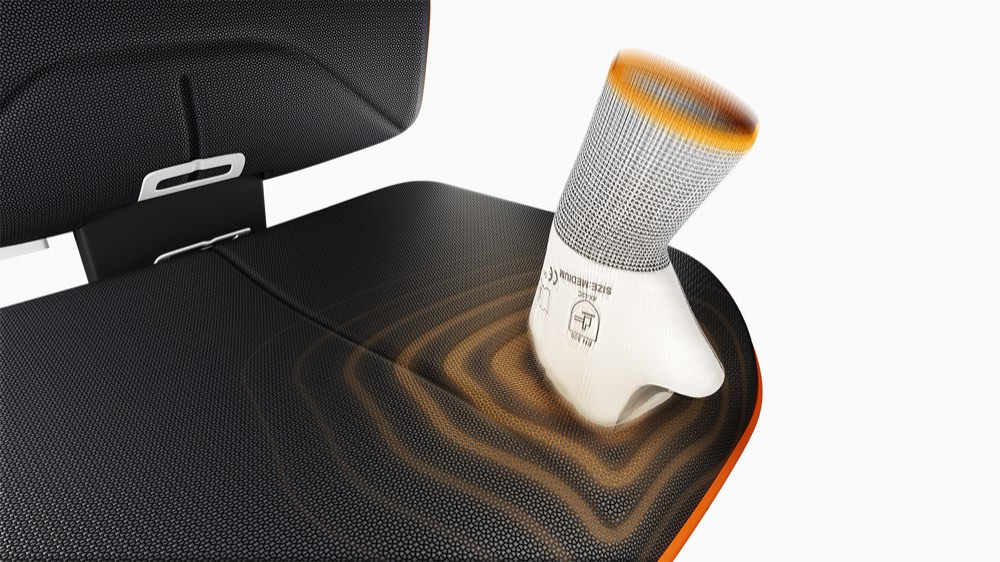

Productie
Werken in de productie
Van automobielindustrie en machinebouw tot textiel: geen productiewerkplek is dezelfde. Medewerkers wisselen zware taken af met precisiewerk, zitten aan hoge tafels of lage werkbanken en delen in ploegendienst vaak dezelfde stoel.
Ondertussen krijgt de stoel olie, vet, spanen en vonken te verduren. Hij moet dus robuust zijn, snel in te stellen en toch bij elke taak ergonomisch ondersteunen.
- Robuust en onderhoudsvriendelijk
- Snel in te stellen bij wisselende gebruikers
- Stabiel en veilig, ook bij ver reiken
Aanrader: Werkplaatsstoel Neon
Bekijk in de webshop